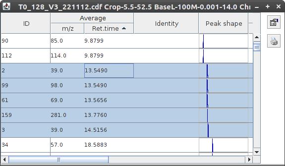
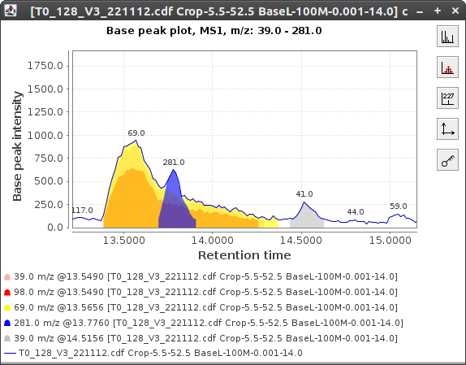
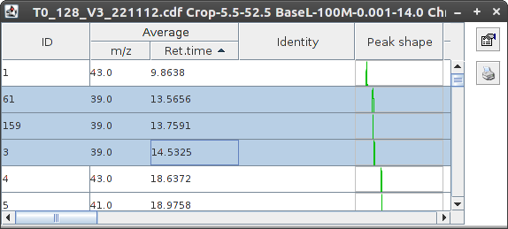
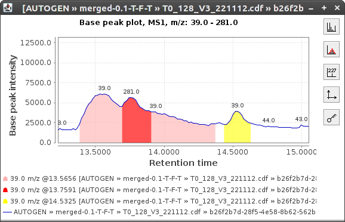
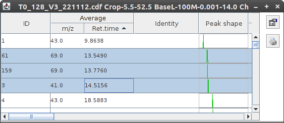
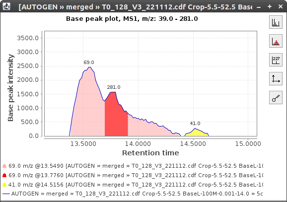

Peak merger
Description
This module extends the peaks in a peak group in both directions of the retention time.
The purpose is mainly to merge peak located in the same retention time range in LC-MS context.
This is particularly useful after having applied a Deconvolution.
The merging is performed peak by peak, and can be built by cumulating the peaks determined as belonging to the same RT group.
This way, each group of peaks results in a single one, which is designed to be representative of the group simply by RT and shape, but
also gives the correct cumulative properties (area, height, ...).
The final peak is either based on the file used to generate the original peak list, or from the oldest raw data file ancestor
(the letter giving a more accurate area for each peak, making it easier to compare between peaks in a given raw sample data file, as well as
cross samples comparisons).
Method parameters
- Suffix
- This string is added to the end of the name of each processed peak list.
- m/z tolerance
- Maximum allowed distance in M/Z between the top data point of all peaks inside each group
- Retention time tolerance
- Maximum allowed distance in RT between the top data point of all peaks inside each group.
- Use original data file
- If checked, get peaks information from the very oldest Raw Data File ancestor (if it has not been removed).
Otherwise: information are grabbed as usual (from the data file the peak list to be merged was built from).
- DETECTED m/z search window
- Ignored if "Use DETECTED peaks only" or "Use original raw data file" is unchecked, or if "Cumulative computing" is checked.
Searches for the top data point among the DETECTED m/z peaks according to this window. The goal, here, is to reduce the values of
the cumulated area, intensity, ... of the merged peaks only to the data points around the current group (in term of m/z).
This is the reason why it hasn't got much sense when not combined with the option "Use original raw data file" - Normally,
in this case, detected peaks would have already been separated (for example by deconvolution, ...), and the need for merging them
back wouldn't be pertinent as well.
- Use DETECTED peaks only
- If checked, resulting merged peaks are computed from DETECTED peaks only.
Otherwise: information are grabbed from the whole raw data file
(takes all the intermediate m/z values within the specified "m/z tolerance").
- Cumulative computing mode (TIC)
- If checked, merged peaks are computed cumulatively. Peaks and their area, intensity and misc averages
are processed from TIC (total ion count). Otherwise: everything is determined from base peak intensity (top data point
of the highest peak in the group, such that the resulting peak doesn't reflect the attempt to get a pertinent quantitative
representation of the final merge (this latter case would be quite equivalent to use "abusively" the Peak Extender or the Remove
Duplicates modules with an infinite m/z tolerance).
- Remove original peak list
- If selected, the original peak list is automatically removed

Peak list obtained from peak list deconvolution.

And its related chromatogram.

The same peak list after running the Peak Merger from the "original oldest initial raw data file".

And its related chromatogram.

The same peak list after running the Peak Merger from the "direct raw data file"
(the one associated to the peak list currently being processed by the merger).

And its related chromatogram.